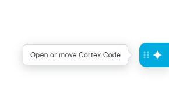
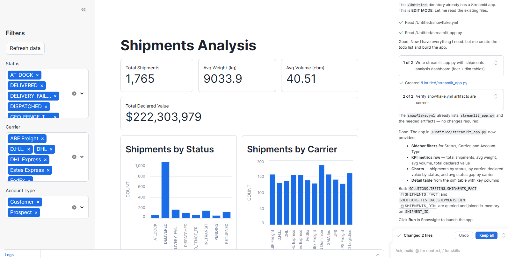

Explore Results with Cortex and Streamlit
Use Snowflake Cortex AI to generate a Streamlit analytics dashboard from your BDI-loaded tables.
What you'll do
Your BDI_LAB.ANALYTICS schema now contains SHIPMENTS_FACT and SHIPMENTS_DIM — analytics-ready tables that join PostgreSQL WMS data with Salesforce CRM data. In this final exercise you'll use Cortex AI to generate a Streamlit app that visualises KPIs directly from those tables.
Generate the Streamlit App with Cortex
Use Cortex Code to generate and run a shipments analytics app.
- 1
In Snowflake, go to Projects → Workspaces. Open the Cortex Code panel (blue diamond button, far right).

- 2
Type the following prompt into the Cortex chat:
I would like to create a streamlit app for a shipments analysis dashboard. The data is in BDI_LAB.ANALYTICS.SHIPMENTS_DIM. Show KPIs for total shipments, on-time delivery rate, and top carriers. - 3
Cortex generates a Streamlit app in your Workspace. Click Run in the generated code to launch it. You should see KPI cards and charts drawn from the data you loaded with BDI.

Lab Complete!
You ingested PostgreSQL and Salesforce data into Snowflake, orchestrated an automated ELT pipeline with parallel containers and push-down SQL, and visualised the results with Cortex AI — all with Boomi Data Integration.
Back to Lab Overview